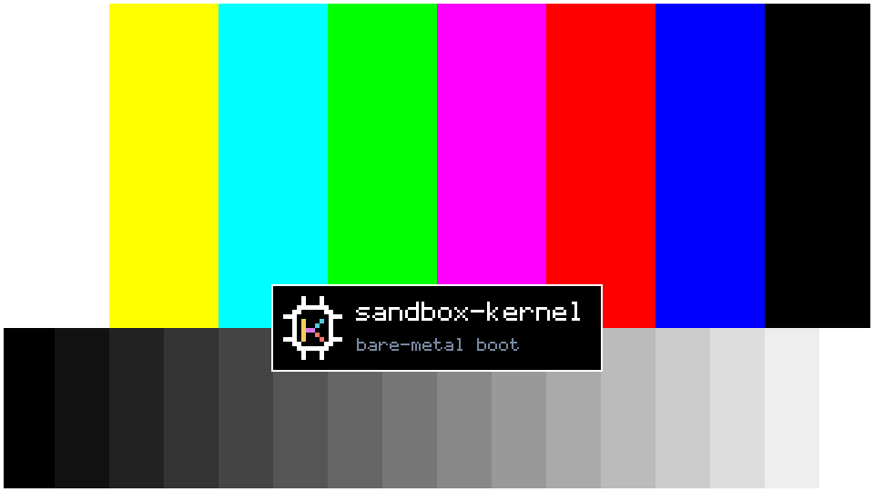
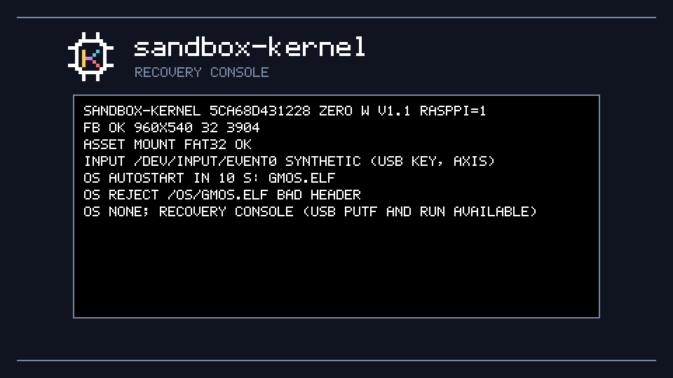
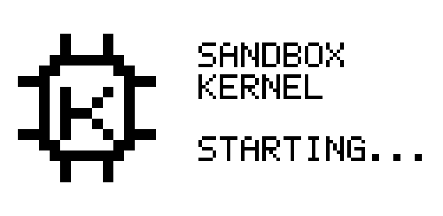
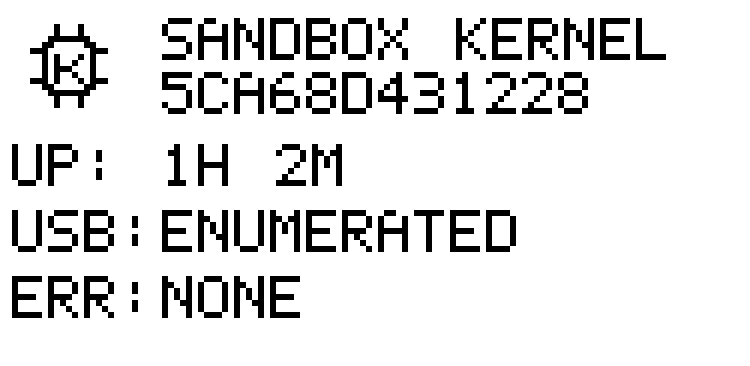

SBX / bare metal
sandbox-kernel
A small bare-metal kernel for your own operating system.
Write your OS in C as a user-mode ARM ELF program, or in JavaScript through the experimental JS.ELF runtime. The kernel owns the hardware and gives your program system calls for graphics, files, input, time, audio, e-ink, and serial.
MIT license. M0 is board-qualified on Raspberry Pi Zero W v1.1 (BCM2835, ARM1176). M1 is in progress.
Start your own OS
Build a card image once, then send programs and kernel updates over USB. Run these commands from the repository root; replace PORT with your Pi's serial device (for example, /dev/cu.usbmodemXXXX on macOS).
-
Build the card image
Install the toolchain, then run:
make make bootmake bootfetches and verifies pinned firmware, createsbuild/boot/, and assemblesbuild/sandbox-m0.img. It does not write to a device.Write the complete image to your microSD card with a card-image tool. This erases the selected card: check the destination and back up its files first.
Card image and build details · Card layout -
Boot and connect
Insert the card and connect the Pi's USB data port to your computer. Check the kernel and read its log:
python3 scripts/usb_kernel.py PORT info python3 scripts/usb_kernel.py PORT tailThe kernel waits 10 seconds before autostart. It tries the program named in
First boot, step by step/OS/AUTORUN.TXT, thenGMOS.ELF, thenDIAG.ELF. With no runnable OS, the USB recovery console stays available. -
Choose C or JavaScript
C: build a static ARMv6, soft-float ELF with the SDK. Start from the diagnostics program and follow the ELF rules and heartbeat requirements.
JavaScript (experimental): build
JS.ELFwithmake jsin gamemaker-os. WriteMAIN.JS, install its folder withputapp, and configureAUTORUN.TXT.The runtime has subsets of DOM, CSS, and 2D canvas; it is not a full browser. JavaScript file access is read-only.
JavaScript setup and app installation -
Send your OS or a new kernel
Stop the OS before installing files, then run your program:
python3 scripts/usb_kernel.py PORT stop python3 scripts/usb_kernel.py PORT put MYOS.ELF python3 scripts/usb_kernel.py PORT run MYOS.ELFTo update the kernel itself after rebuilding, send the packaged runtime:
python3 scripts/usb_kernel.py PORT send build/runtime.ski
USB commands and update readinessputinstalls an OS file;sendstarts an A/B kernel trial. The tool uses only Python 3's standard library.
Features & status
M0 is board-qualified; M1 is still in progress. “Available” below means documented on develop, not that every feature has completed board qualification. Check your program's startup ABI version before using newer calls.
| Feature | Availability and limits |
|---|---|
| OS isolation & recovery | AvailableUser-mode ELF loading, heartbeat checks, bounded restarts, diagnostics fallback, and a USB recovery console. |
| A/B kernel updates | Board-qualified in M0Verified USB transfer, trial boot, confirmation, and automatic fallback to a verified confirmed kernel. |
| HDMI graphics | Available · ABI 1.0 / 1.2Mapped framebuffer starts at 640×480×32. Mode and palette calls add RGB565 and indexed color; 960×540×16 fits, 1920×1080 does not. |
| Files, cache & saves | Available · ABI 1.0–1.7Read-only FAT32 assets, seek, metadata, and long-name reads. Bounded writes only in cache and save folders; use fsync to commit. |
| Input & time | Available · ABI 1.0 / 1.1Linux-style input events from synthetic USB commands; monotonic clock and sleep_until. A separate make USB_ROLE=host all build feeds boot-keyboard reports into event0 (hardware-untested, no CDC or hub support). Gamepads remain unavailable. |
| App arena | Available · ABI 1.6One optional 2,195,456-byte block per run; no free or resize. |
| E-ink status | Board-qualified in M0Kernel-owned starting and status screens show uptime, USB state, and the last error. ABI 1.9 adds OS titles, marks and whole pages with refresh limits (hardware-untested). |
| Audio API | Available · ABI 1.8/dev/audio queues stereo 16-bit PCM at 48 kHz in a 16,384-frame ring. HDMI DMA is linked with a silent null fallback. Board evidence covers drain counters; listening, sustained load and fault recovery remain hardware-untested. |
| Mixer & HDMI-CEC | Mixer linked; CEC host-onlyThe kernel-internal mixer serves the USB tone command. CEC cores and the separate PCM qualification core remain unlinked; CEC is hardware-untested. |
| OS serial & examples | Available · ABI 1.10 serial/dev/serial0 adds a bounded two-way OS channel on the device-role CDC link (console in the host tool), hardware-untested. Hello and Clock C examples are in examples/; build with make examples. |
| Wireless & more boards | Planned · not availableNo Wi-Fi or Bluetooth driver runs. Other Raspberry Pi board backends are planned. |
Sources: OS author's guide, milestones and acceptance tests, audio device, e-ink API, serial, and USB host role.
Updates, recovery, and limits
Kernel updates use A/B slots. The inactive slot is verified before a trial boot. The runtime confirms a matching trial after 30 seconds of health checks; a failed or unconfirmed trial falls back on the next boot. Host-role images never confirm, and make boot refuses a host runtime. This applies to kernel updates, not OS files installed with put.
Your OS must report health: once within 10 seconds of starting, then at least every 2 seconds. One fault permits a restart; a second within 60 seconds ends the program. An autostarted OS falls back to DIAG.ELF; a program started with USB run returns to recovery.
Recovery is the kernel with no OS running. In the default device role, USB commands stay available so you can stop, put, and run a replacement. The first 10 seconds of boot also give you a window to replace a bad program before autostart.
Keep the card reader handy. A/B recovery requires a verified fallback. If neither kernel slot validates, USB rescue in the selector is not implemented: restore the generated image with a card reader. CRC and SHA-256 detect corruption; they do not authenticate code. Install only builds you trust.
OS files are limited to 1 MiB, with an 8 MiB loaded-image quota including .bss. General SD writing is unsupported. Read the program limits and update and card-reader recovery policy.
The kernel's own screens
Host-test renders made by the same drawing code the board runs, scaled here to fit. These show kernel boot and recovery screens, not an OS desktop.




Built on it
Game-Maker OS
The first OS written for sandbox-kernel lives in a separate repository. It also builds the experimental JS.ELF runtime for JavaScript apps. Your OS uses the same kernel interface; it does not need to be a game system.
Start with the OS author's guide and the C SDK, or follow the JavaScript path.